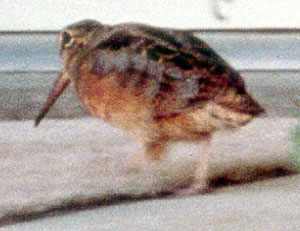

| These photographs accompany records that have been recently submitted to the committee. This record
has been ACCEPTED. American Woodcock Scolopax minor 9 November 1998, Iron Mtn Pumping Plant, SBE 1998-177 © 1998 Don Roberson  American Woodcock Scolopax minor 9 November 1998, Iron Mtn Pumping Plant, SBE 1998-177 © 1998 Don Roberson Back to CBRC Rare Bird Photos |